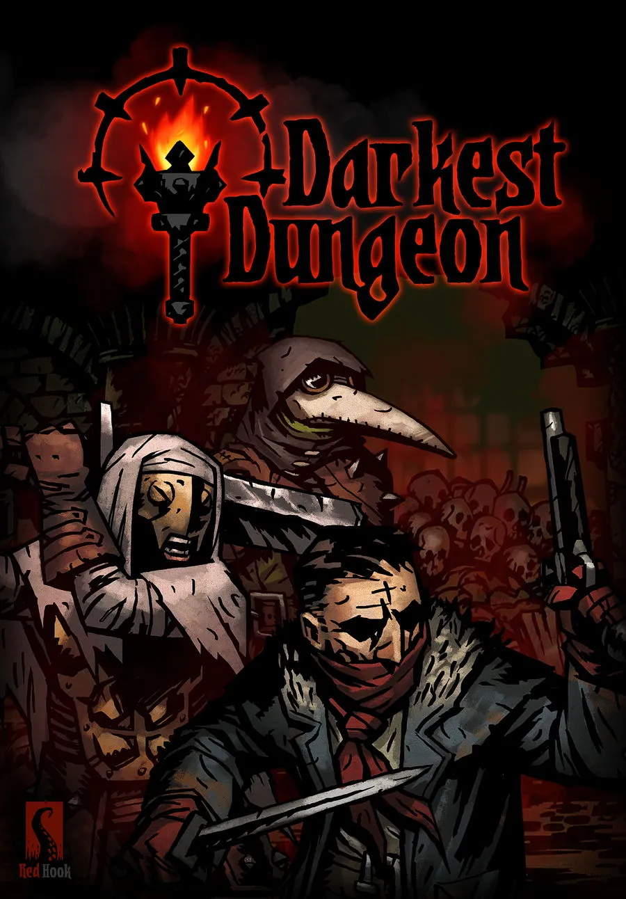

Skip to project content
프로젝트 본문 바로가기
n
↗
l
NAYOUNG LIM
Work
프로젝트
About
소개
Let’s talk ↗
연락하기 ↗
← All projects
← 전체 프로젝트
PROJECT / 08
프로젝트 / 08
Darkest Dungeon — analysis of fun
다키스트 던전 재미 분석문
Darkest Dungeon — design analysis
다키스트 던전 분석문

KEEP EXPLORING
계속 살펴보기
Bone To Gather
Bone To Gather (본 투 게더)
→